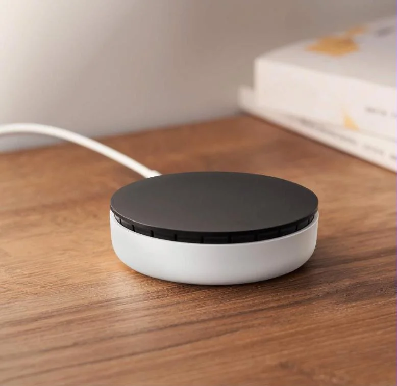

Умный дом без проводов: почему Wi-Fi — тупик, как работает Zigbee и какой хаб выбрать в 2026 году
Время чтения: 7 минут • Разбор по характеристикам и отзывам • Редакция ТехноГид
Большинство начинает знакомство с умным домом с типичной ошибки: покупают пару Wi-Fi розеток, смарт-лампочку и Wi-Fi датчик движения. Через два месяца батарейка в датчике садится, роутер захлебывается, а свет включается с задержкой в 3–4 секунды. Разбираем, почему прямая связь по Wi-Fi не годится для датчиков и как работает стандарт Zigbee.
1. Почему Wi-Fi для датчиков — инженерный тупик
Чудовищный жор батарейки: Wi-Fi разрабатывался под тяжелый трафик. Радиомодулю требуется постоянно поддерживать сессию с роутером. Батарейка в Wi-Fi датчике садится заметно быстрее, чем в Zigbee-аналоге: по данным производителей, Zigbee-датчики на «таблетке» CR2032 работают порядка года-двух и больше (проверить по конкретной модели), потому что почти всё время «спят».
Лимит домашнего роутера: Бытовой роутер плохо переносит десятки постоянных клиентов на 2.4 ГГц (точный предел зависит от модели — проверить). Начинаются потери пакетов, умные устройства уходят в офлайн, а скорость домашней сети проседает.
Облачная задержка: Wi-Fi датчик шлет пакет через сервер в интернете. Пропал сигнал у провайдера — сценарий перекрытия крана при потопе просто не сработает.
2. Mesh-топология Zigbee: роутеры против спящих устройств
Сеть Zigbee организована по ячеистому принципу (Mesh) и делит устройства строго на три типа:
Координатор (Хаб / Шлюз): Центр сети, связывающий Zigbee с домашней сетью и приложениями.
Роутеры (Устройства с постоянным питанием 220V): Умные розетки, реле в подрозетниках, проводные выключатели. Они выполняют свою задачу и одновременно ретранслируют сигналы соседних датчиков, убирая мертвые зоны в квартире.
Конечные устройства (End Devices): Все датчики на батарейках. Они просыпаются на миллисекунды только для отправки события (сработка геркона, изменение влажности) и не участвуют в ретрансляции, экономя заряд.
Правило стабильности: Чем больше в квартире устройств на 220V (розеток или встроенных модулей), тем плотнее и стабильнее покрытие Zigbee.
3. Сравнение хабов для рынка РФ
Модель хаба
Интерфейсы
Поддержка экосистем
Локальные сценарии
Цена
Яндекс Станция Миди (со встроенным Zigbee)
Wi-Fi, Bluetooth, Zigbee
Умный дом Яндекса (Алиса)
Базовые автоматизации
проверить на витрине
Яндекс Хаб
Wi-Fi, Ethernet, Bluetooth, Zigbee, ИК-пульт
Умный дом Яндекса
Базовые автоматизации
проверить на витрине
Aqara Hub M2
Ethernet (RJ45), Wi-Fi, Zigbee 3.0, ИК
Apple HomeKit, Aqara Home, Яндекс
Да (полная локальная автоматизация)
проверить на витрине
Aqara Hub E1 (USB-стик)
USB-A питание, Wi-Fi, Zigbee 3.0
Apple HomeKit, Aqara Home, Яндекс
Да
проверить на витрине

Яндекс Хаб, официальное фото производителя
Яндекс Хаб со встроенным Zigbee и ИК-пультом
Оптимальный старт для тех, кто управляет техникой голосом через Алису. Встроенный ИК-порт позволяет автоматизировать управление старыми кондиционерами и ТВ.
Ссылка ведёт на карточку у проверенного продавца со статусом «Оригинал»; у самого лота пока нет оценок. Актуальную цену проверяйте на витрине.
4. Выключатели без нейтрали (No Neutral): решение проблемы тления ламп
В большинстве домов к выключателю подходит только фазный провод (L). Модели без нейтрали питаются за счет паразитного микротока, протекающего через лампу. Из-за этого светодиодные лампочки часто слабо светятся в темноте или стробят короткими вспышками.
Решение: для таких выключателей производители обычно советуют ставить обходной конденсатор или «балласт» параллельно лампе, если она мерцает. Комплектацию конкретной модели проверяйте в карточке и инструкции.
Aqara E1 (QBKG38LM) — выключатель без нейтрали
Умный выключатель для проводки без нулевого провода: ставится в подрозетник вместо обычного, физическая клавиша продолжает работать. Для светодиодных ламп с мерцанием смотрите рекомендации производителя по конденсатору.
Продаётся через официального дистрибьютора, у лота хороший рейтинг. Протокол Zigbee в карточке прямо не указан — проверить перед покупкой. Цену смотрите на витрине.